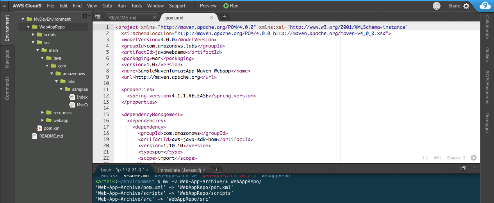

AWS DevOps Essentials
{kind=link}
An Introductory Workshop on CI/CD Practices
In few hours, quickly learn how to effectively leverage various AWS services to improve developer productivity and reduce the overall time to market for new product capabilities. In this session, we will demonstrate a prescriptive approach to incrementally adopt and embrace some of the best practices around continuous integration & delivery using AWS Developer Tools and 3rd party solutions including, AWS CodeCommit (a managed source control service), AWS CodeBuild (a fully managed build service), Jenkins (an open source automated build server), CodePipeline (a fully managed continuous delivery service), and CodeDeploy (an automated application deployment service). We will also highlight some best practices and productivity tips that can help make your software release process fast, automated, and reliable.
Prerequisites:
-
Configure AWS CodeCommit: The easiest way to set up AWS CodeCommit is to configure HTTPS Git credentials for AWS CodeCommit. On the user details page in IAM console, choose the Security Credentials tab, and in HTTPS Git credentials for AWS CodeCommit, choose Generate.
 💡 Note:
💡 Note:
Make Note of the Git HTTP credentials handy. It will be used for cloning and pushing changes to Repo. Also, You can find detail instruction on how to configure HTTPS Git Credential here
-
IAM Permissions: Finally, for the AWS account ensure you have sufficient privileges. You must have permissions for the following services:
AWS Identity and Access Management
Amazon Simple Storage Service
AWS CodeCommit
AWS CodeBuild
AWS CloudFormation
AWS CodeDeploy
AWS CodePipeline
AWS Cloud9
Amazon EC2
Amazon SNS
! Important:
Select the region of your choice for the lab. Kindly the select the region which has all four Code* services. You can find the region services list. Stick to the same region throughout all labs.
Lab 1 - Build project on the cloud
AWS Cloud9 IDE - Set up
AWS Cloud9 is a cloud-based integrated development environment (IDE) that lets you write, run, and debug your code with just a browser. It includes a code editor, debugger, and terminal. Cloud9 comes pre-packaged with essential tools for popular programming languages and the AWS Command Line Interface (CLI) pre-installed so you don’t need to install files or configure your laptop for this workshop. Your Cloud9 environment will have access to the same AWS resources as the user with which you logged into the AWS Management Console.
Take a moment now and setup your Cloud9 development environment.
✅ Step-by-step Instructions
Go to the AWS Management Console, click Services then select Cloud9 under Developer Tools.
Click Create environment.
Enter
MyDevEnvironmentinto Name and optionally provide a Description.Click Next step.
You may leave Environment settings at their defaults of launching a new t2.micro EC2 instance which will be paused after 30 minutes of inactivity.
Click Next step.
Review the environment settings and click Create environment. It will take several minutes for your environment to be provisioned and prepared.
Once ready, your IDE will open to a welcome screen. Below that, you should see a terminal prompt similar to:

You can run AWS CLI commands in here just like you would on your local computer. Verify that your user is logged in by running
aws sts get-caller-identity.aws sts get-caller-identityYou’ll see output indicating your account and user information:
Admin:~/environment $ aws sts get-caller-identity
Keep your AWS Cloud9 IDE opened in a tab throughout this workshop as we’ll use it for activities like cloning, pushing changes to repository and using the AWS CLI.
💡 Tips
Keep an open scratch pad in Cloud9 or a text editor on your local computer for notes. When the step-by-step directions tell you to note something such as an ID or Amazon Resource Name (ARN), copy and paste that into the scratch pad.
Stage 1: Create an AWS CodeCommit Repository
To create the AWS CodeCommit repository (console)
-
Open the AWS CodeCommit console at https://console.aws.amazon.com/codecommit.
-
In the region selector, choose the region where you will create the repository. For more information, see Regions and Git Connection Endpoints.
-
On the Welcome page, choose Get Started Now. (If a Dashboard page appears instead, choose Create repository.)
-
On the Create repository page, in the Repository name box, type WebAppRepo.
-
In the Description box, type My demonstration repository.
-
Choose Create repository to create an empty AWS CodeCommit repository named WebAppRepo.
Note The remaining steps in this tutorial assume you have named your AWS CodeCommit repository WebAppRepo. If you use a name other than WebAppRepo, be sure to use it throughout this tutorial. For more information about creating repositories, including how to create a repository from the terminal or command line, see Create a Repository.
Stage 2: Clone the Repo
In this step, you will connect to the source repository created in the previous step. To do this, you select a directory on your local machine that represents the local repo. You use Git to clone and initialize a copy of your empty AWS CodeCommit repository inside of that directory. Then you specify the user name and email address used to annotate your commits.
-
Go to Cloud9 IDE terminal prompt
-
In the region selector, choose the region where the repository was created. Repositories are specific to an AWS region.
-
Run git clone to pull down a copy of the repository into the local repo:
git clone https://git-codecommit.<YOUR-REGION>.amazonaws.com/v1/repos/WebAppRepoProvide your Git HTTPs credential when prompted. You would be seeing the following message if cloning is successful.
warning: You appear to have cloned an empty repository.
Stage 3: Commit changes to Remote Repo
-
Download the Sample Web App Archive by running the following command from IDE terminal.
wget https://s3.amazonaws.com/devops-workshop-0526-2051/Web-App-Archive.zip -
Unarchive and copy all the contents of the unarchived folder to your local repo folder.
unzip Web-App-Archive.zip mv -v Web-App-Archive/* WebAppRepo/After moving the files, your local repo should like the one below.

-
Change the directory to your local repo folder. Run git add to stage the change:
- Run git commit to commit the change:
git commit -m "Initial Commit" - Run git push to push your commit through the default remote name Git uses for your AWS CodeCommit repository (origin), from the default branch in your local repo (master):
cd WebAppRepo
git add *
💡 Tip To see details about the commit you just made, run git log.
git push -u origin master
Provide your Git HTTPs credential when prompted.
💡 Tip After you have pushed files to your AWS CodeCommit repository, you can use the AWS CodeCommit console to view the contents. For more information, see Browse the Contents of a Repository.
Stage 4: Prepare Build Service
First, let us create the necessary roles required to finish labs. Run the CloudFormation stack to create service roles. Ensure you are launching it in the same region as your AWS CodeCommit repo.
-
Upon completion take a note on the service roles created. Check describe-stacks to find the output of the stack.
-
For Console, refer to the CloudFormation Outputs tab to see output.
A S3 Bucket is also created. Make a note of this bucket. This will be used to store the output from CodeBuild in the next step.
Sample Output:
-
Let us create CodeBuild project from CLI. To create the build project using AWS CLI, we need JSON-formatted input. Create a json file named 'create-project.json' under 'MyDevEnvironment'.

Copy the content below to create-project.json. (Replace the placeholders marked with <<>> with your own values.) To know more about the codebuild project json review the spec.
- Switch to the directory that contains the file you just saved, and run the create-project command:
- Sample output JSON for your reference
If successful, output JSON should have values such as:
The lastModified value represents the time, in Unix time format, when information about the build project was last changed.
The created value represents the time, in Unix time format, when the build project was created.
The ARN value represents the ARN of the build project.
aws cloudformation create-stack --stack-name DevopsWorkshop-roles --template-body https://s3.amazonaws.com/devops-workshop-0526-2051/01-aws-devops-workshop-roles.template --capabilities CAPABILITY_IAM
Tip To learn more about AWS CloudFormation, please refer to AWS CloudFormation UserGuide.
{
"name": "devops-webapp-project",
"source": {
"type": "CODECOMMIT",
"location": "https://git-codecommit.<<YOUR-REGION-ID>>.amazonaws.com/v1/repos/<<YOUR-REPO-NAME>>"
},
"artifacts": {
"type": "S3",
"location": "<<YOUR-CODEBUILD-OUTPUT-BUCKET>>",
"packaging": "ZIP",
"name": "WebAppOutputArtifact.zip"
},
"environment": {
"type": "LINUX_CONTAINER",
"image": "aws/codebuild/java:openjdk-8",
"computeType": "BUILD_GENERAL1_SMALL"
},
"serviceRole": "<<BuildRoleArn-FROM-CLOUDFORMATION-OUTPUT>>"
}
aws codebuild create-project --cli-input-json file://create-project.json
{
"project": {
"name": "project-name",
"description": "description",
"serviceRole": "serviceRole",
"tags": [
{
"key": "tags-key",
"value": "tags-value"
}
],
"artifacts": {
"namespaceType": "namespaceType",
"packaging": "packaging",
"path": "path",
"type": "artifacts-type",
"location": "artifacts-location",
"name": "artifacts-name"
},
"lastModified": lastModified,
"timeoutInMinutes": timeoutInMinutes,
"created": created,
"environment": {
"computeType": "computeType",
"image": "image",
"type": "environment-type",
"environmentVariables": [
{
"name": "environmentVariable-name",
"value": "environmentVariable-value",
"type": "environmentVariable-type"
}
]
},
"source": {
"type": "source-type",
"location": "source-location",
"buildspec": "buildspec",
"auth": {
"type": "auth-type",
"resource": "resource"
}
},
"encryptionKey": "encryptionKey",
"arn": "arn"
}
}
Note Except for the build project name, you can change any of the build project's settings later. For more information, see Change a Build Project's Settings (AWS CLI).
Stage 5: Let's build the code on cloud
A build spec is a collection of build commands and related settings in YAML format, that AWS CodeBuild uses to run a build. Create a file namely, buildspec.yml under WebAppRepo folder. Copy the content below to the file and save it. To know more about how CodeBuild works.
- Run the start-build command:
-
If successful, data would appear showing successful submission. Make a note of the build id value. You will need it in the next step.
-
In this step, you will view summarized information about the status of your build.
-
Did the build succeed? if the build failed, why? The reason is build spec YAML file is not pushed to the repository. Push the code changes by git add, commit, and push. Repeat steps from 2 through 4.
-
You will also be able to view detailed information about your build in CloudWatch Logs. You can complete this step by visiting the AWS CodeBuild console.
-
In this step, you will verify the WebAppOutputArtifact.zip file that AWS CodeBuild built and then uploaded to the output bucket. You can complete this step by visiting the AWS CodeBuild console or the Amazon S3 console.
version: 0.1
phases:
install:
commands:
- echo Nothing to do in the install phase...
pre_build:
commands:
- echo Nothing to do in the pre_build phase...
build:
commands:
- echo Build started on `date`
- mvn install
post_build:
commands:
- echo Build completed on `date`
artifacts:
files:
- target/javawebdemo.war
discard-paths: yes
As a sample shown below:

Note Visit this page to know more about build spec and how you can use multiple build specs in the same repo.
aws codebuild start-build --project-name devops-webapp-project
Note: You can start build with more advance configuration setting via JSON. If you are interested to learn more about it, please visit here.
aws codebuild batch-get-builds --ids <<ID>>
Note: Replace <<
Note: Troubleshooting CodeBuild - Use the information to help you identify, diagnose, and address issues.
Summary:
This concludes Lab 1. In this lab, we successfully created repository with version control using AWS CodeCommit and built our code on the cloud using AWS CodeBuild service.
✅ Do It Yourself (DIY): Using the CodeCommit Console try to do the following tasks. - Create an additional branch within your repository.
-
Make changes to the new branch and compare the changes between branches.
-
Enable triggers on your repository for specific events.
Lab 2 - Automate deployment for testing
Stage 1: Prepare environment for Testing
-
Run the CloudFormation stack using the following AWS CLI command:
-
The Stack will have a VPC w/ 1 public subnet, an IGW, route tables, ACL, 2 EC2 instances. Also, the EC2 instances will be launched with a User Data script to automatically install the AWS CodeDeploy agent.
-
Verify that by visiting the EC2 Console and view option for user data.You would see the following script.
-
You can refer to this instruction to install the CodeDeploy agent for other OSs like Amazon Linux, RHEL, Ubuntu, or Windows.
-
AWS CodeDeploy can deploy to both Amazon EC2 instances and on-premises instances.To know more visit.
aws cloudformation create-stack --stack-name DevopsWorkshop-Env --template-url https://s3.amazonaws.com/devops-workshop-0526-2051/02-aws-devops-workshop-environment-setup.template --capabilities CAPABILITY_IAM
#!/bin/bash -ex
yum install -y aws-cli
cd /home/ec2-user/
wget https://aws-codedeploy-us-east-1.s3.amazonaws.com/latest/codedeploy-agent.noarch.rpm
yum -y install codedeploy-agent.noarch.rpm
service codedeploy-agent start
Stage 2: Create CodeDeploy Application and Deployment group
Run the following to create an application for CodeDeploy.
Run the following to create a deployment group and associates it with the specified application and the user's AWS account.
You need to replace the service role with DeployRoleArn Value we created using roles CFN stack.
- Let us review all the changes by visiting the CodeDeploy Console.
aws deploy create-application --application-name DevOps-WebApp
aws deploy create-deployment-group --application-name DevOps-WebApp --deployment-config-name CodeDeployDefault.OneAtATime --deployment-group-name DevOps-WebApp-BetaGroup --ec2-tag-filters Key=Name,Value=DevWebApp01,Type=KEY_AND_VALUE --service-role-arn <<REPLACE-WITH-YOUR-CODEDEPLOY-ROLE-ARN>>
Note: We are using the tags to attach instances to the deployment group.
Stage 3: Prepare application for deployment
-
Without an AppSpec file, AWS CodeDeploy cannot map the source files in your application revision to their destinations or run scripts at various stages of the deployment.
-
Copy the template into a text editor and save the file as appspec.yml in the WebAppRepo directory of the revision.
-
Review the script folder in the repo for the various scripts like Start, Stop, health check etc. These scripts will be called as per the hook definition in appsec.yml file during deployment.
-
Since we are going to deploy the application via CodeDeploy, we need to package additional files needed by CodeDeploy. Let us make change to the buildspec.yml to incorporate the changes.
- Save the changes to buildspec.yml. Run git add, commit, and push the changes to CodeCommit repo.
version: 0.0
os: linux
files:
- source: /target/javawebdemo.war
destination: /tmp/codedeploy-deployment-staging-area/
- source: /scripts/configure_http_port.xsl
destination: /tmp/codedeploy-deployment-staging-area/
hooks:
ApplicationStop:
- location: scripts/stop_application
timeout: 300
BeforeInstall:
- location: scripts/install_dependencies
timeout: 300
ApplicationStart:
- location: scripts/write_codedeploy_config.sh
- location: scripts/start_application
timeout: 300
ValidateService:
- location: scripts/basic_health_check.sh
As a sample shown below:
version: 0.1
phases:
install:
commands:
- echo Nothing to do in the install phase...
pre_build:
commands:
- echo Nothing to do in the pre_build phase...
build:
commands:
- echo Build started on `date`
- mvn install
post_build:
commands:
- echo Build completed on `date`
artifacts:
files:
- appspec.yml
- scripts/**/*
- target/javawebdemo.war
Stage 4: Deploy an application revision
- Run the start-build command:
-
Visit the CodeBuild Console to ensure build is successful. Upon successful completion of build, we should see new WebAppOutputArtifact.zip upload to the configured CodeBuild S3 Bucket.
-
Get the eTag for the object WebAppOutputArtifact.zip uploaded to S3 bucket. You can get etag by visiting S3 console. Or, executing the following command.
- Run the following to create a deployment. Replace <<YOUR-CODEBUILD-OUTPUT-BUCKET>> with your S3 bucket name created in Lab 1. Also, update the eTag based on previous step.
-
Verify the deployment status by visiting the CodeDeploy console.
-
Check the deploy console for status. if the deployment failed, then look at the error message and correct the deployment issue.
-
if the status of deployment is success, we should be able to view the web application deployed successfully to the EC2 server namely DevWebApp01
-
Go to the EC2 Console, get the public DNS name of the server and open the url in a browser. You should see a sample web application.
aws codebuild start-build --project-name devops-webapp-project
aws s3api head-object --bucket <<YOUR-CODEBUILD-OUTPUT-BUCKET>> --key WebAppOutputArtifact.zip
As a sample S3 properties console showing etag below:
aws deploy create-deployment --application-name DevOps-WebApp --deployment-group-name DevOps-WebApp-BetaGroup --description "My very first deployment" --s3-location bucket=<<YOUR-CODEBUILD-OUTPUT-BUCKET>>,key=WebAppOutputArtifact.zip,bundleType=zip,eTag=<<YOUR-ETAG-VALUE>>
Summary:
This concludes Lab 2. In this lab, we successfully created CodeDeploy application and deployment group. We also modified buildspec.yml to include additional components needed for deployment. We also successfully completed deployment of application to test server.
✅ Do It Yourself (DIY): Environment variable for CodeBuild. How can we specifiy environment variable for your Build Environment. Environment variable contains a mapping of key/value scalars, where each mapping represents a single custom environment variable in plain text. key is the name of the custom environment variable, and value is that variable's value. To know more about how to pass environment variable. Check the build spec reference
- Use SSM as Parameter Store.
-
If you want to store environment variables outside, then use Amazon EC2 Systems Manager Parameter Store. Check this for how to store parameter and secure them using KMS.
-
To allow AWS CodeBuild to retrieve custom environment variables stored in Amazon EC2 Systems Manager Parameter Store, you must add the ssm:GetParameters action to your AWS CodeBuild service role.
Lab 3 - Setup CI/CD using AWS CodePipeline
Stage 1: Create a Pipeline (Console)
To create a pipeline in the console, you’ll need to provide the source file location and information about the providers you will use for your actions.
When you use the pipeline wizard, AWS CodePipeline creates the names of stages (Source, Build, Staging). These names cannot be changed. However, you can delete Build and Staging if you prefer to alter the names. You can give more specific names (for example, BuildToGamma or DeployToProd) to stages you add later.
Also, existing pipeline configuration can be exported and used to create pipeline in another region.
-
Sign in to the AWS Management Console and open the AWS CodePipeline console at http://console.aws.amazon.com/codepipeline.
-
On the Welcome page, choose Create pipeline.
-
On the Step 1: Name page, in the Pipeline name box, type the name for your pipeline, and then choose Next step.
On the Step 2: Source page, in the Source provider drop-down list, choose the type of repository where your source code is stored and specify its required options:
AWS CodeCommit: In Repository name, choose the name of the AWS CodeCommit repository you created in Lab 1 to use as the source location for your pipeline. In Branch name, from the drop-down list, choose the branch you want to use.
After you choose the AWS CodeCommit repository name and branch, a message is displayed in Change Detection Mode showing the Amazon CloudWatch Events rule that will be created for this pipeline. Leave default selection. Choose Next step.
-
On the Step 3: Build page, do the following, and then choose Next step:
Choose AWS CodeBuild, and then Select an existing build project we created in Lab 1.
Then choose Next step.
- On the Step 4: Deploy page, do the following, and then choose Next step:
Choose the following default providers from the Deployment provider drop-down list:
AWS CodeDeploy: Type or choose the name of an existing AWS CodeDeploy application in Application name and the name of a deployment group for that application in Deployment group created in Lab2 and then choose Next step.
On the Step 5: Service Role page, do the following, and then choose Next step:
In the Service Role, drop-down list, choose an IAM service role we create in Lab 1 for AWS CodePipeline.
On the Step 6: Review page, review your pipeline configuration, and then choose Create pipeline to create the pipeline.
-
Now that you’ve created your pipeline, you can view it in the console. Pipeline will start automatically in few minutes. Otherwise, test it by manually clicking the Release button.
If this is your first time using AWS CodePipeline, an introductory page appears instead of Welcome. Choose Get Started Now.
Within a single AWS account, each pipeline you create in a region must have a unique name. Names can be reused for pipelines in different regions.
Note
After you create a pipeline, you cannot change its name. For information about other limitations, see Limits in AWS CodePipeline.
Stage 2: Create CodeDeploy Deployment group for Production
- Run the following to create a deployment group and associates it with the specified application and the user's AWS account. You need to replace the service role ARN we created using roles stack.
aws deploy create-deployment-group --application-name DevOps-WebApp --deployment-config-name CodeDeployDefault.OneAtATime --deployment-group-name DevOps-WebApp-ProdGroup --ec2-tag-filters Key=Name,Value=ProdWebApp01,Type=KEY_AND_VALUE --service-role-arn <<REPLACE-WITH-YOUR-CODEDEPLOY-ROLE-ARN>>
Note: We are using the different group name and Production tag to attach instance to the deployment group.
Stage 3: Edit a Pipeline (Console)
You can use the AWS CodePipeline console to add, edit, or remove stages in a pipeline, as well as to add, edit, or remove actions in a stage.
We will edit the pipeline to add the stage for production deployment and introduce manual gating for production deployment.
-
On the pipeline details page, choose Edit. This opens the editing page for the pipeline.
-
To add a stage, choose + Stage after the existing Staging Stage.
-
Provide a name for the stage as Prod, and then add an one action to it. Items marked with an asterisk are required.
-
The Add action panel opens. In Action category, choose the category as Deploy.
-
In Deploy Action section: provide name as ProductionDeployment and deployment provider as AWS CodeDeploy
-
In AWS CodeDeploy: Type or choose the name of an existing AWS CodeDeploy application in Application name and the name the production deployment group created previous stage
-
In Input artifacts: select the MyAppBuild
-
Choose Add Action.
-
Finally, save changes by clicking Save pipeline changes button.
Stage 4: Add Manual approval action
In AWS CodePipeline, you can add an approval action to a stage in a pipeline at the point where you want the pipeline execution to stop so that someone with the required AWS Identity and Access Management permissions can approve or reject the action.
If the action is approved, the pipeline execution resumes. If the action is rejected—or if no one approves or rejects the action within seven days of the pipeline reaching the action and stopping—the result is the same as an action failing, and the pipeline execution does not continue.
- Create SNS topic for Approval notification. And note the topic ARN from the result.
- Subscribe to the topic using your email id. Replace the ARN and email id placeholders accordingly.
-
An Email would be sent for confirmation on the subscription. Acknowledge the subscription to receive mails from topic.
-
Choose + Stage at the point in the pipeline between Staging and Prod stage, and type a name for the stage.
-
Choose the + action icon.
-
On the Add action page, do the following:
-
In Action category, choose Approval.
-
In Action name, type a name to identify the action.
-
In Approval type, choose Manual approval.
-
In SNS topic ARN, choose the name of the topic created to send notifications for the approval action.
-
(Optional) In Comments, type any additional information you want to share with the reviewer.
-
Choose Add action.
-
To test your action, choose Release change to process that commit through the pipeline, commit a change to the source specified in the source stage of the pipeline.
aws sns create-topic --name WebApp-Approval-Topic
aws sns subscribe --topic-arn <<YOUR-TOPIC-ARN>> --protocol email --notification-endpoint <<YOUR-EMAIL-ID>>
Stage 5: Approve or Reject an Approval Action in AWS CodePipeline
If you receive a notification that includes a direct link to an approval action, choose the Approve or reject link, sign in to the console if necessary, and then continue with step 7 below. Otherwise, use all the following steps.
-
Open the AWS CodePipeline console at https://console.aws.amazon.com/codepipeline/.
-
On the All Pipelines page, choose the name of the pipeline.
-
Locate the stage with the approval action.
-
Hover over the information icon to view the comments and URL, if any. The information pop-up message will also display the URL of content for you to review, if one was included.
-
If a URL was provided, choose the Manual approval link in the action to open the target Web page, and then review the content.
-
Return to the pipeline details view, and then choose the Review button.
-
In the Approve or reject the revision window, type comments related to your review, such as why you are approving or rejecting the action, and then choose the Approve or Reject button.
Summary:
This concludes Lab 3. In this lab, we successfully created CodePipeline for continuous code build and deployment. We also modified CodePipeline to include manual approval action before deploying code to production environment. We also successfully completed continuos deployment of application to both test and production servers.
✅ Do It Yourself (DIY):
-
Import and Export pipeline. Refer this link
-
Using the CodeDeploy Console try to do the following tasks.
-
Enable triggers on your Production Deployment group for specific events.
-
Change the deployment type from In placement to BlueGreen. Also check various deployment config options.
-
Lab 4 - Using Lambda as Test Stage in CodePipeline
Stage 1: Create a sample Lambda function
-
Sign in to the AWS Management Console and open the AWS Lambda console at https://console.aws.amazon.com/lambda/.
-
On the Lambda console page, choose Create a function.
-
On the Blueprints page, choose Author from scratch.
-
On the Basic information section page
-
For Name*, type a name for your Lambda function (for example, MyLambdaFunctionForAWSCodePipeline).
-
For Role*, select choose an existing role.
-
For Existing role* select CodePipelineLambdaExecRole which we created as part of the Lab 1 setup.
-
-
Click Create Function
Choose Runtime as Node.js 6.10 if it is not defaulted.
-
Then copy the following code into the Lambda function code box
-
Scroll down to Basic settings section, set Timeout, type 20 for sec.
-
Scroll up and click Save button.
var assert = require('assert');
var AWS = require('aws-sdk');
var http = require('http');
exports.handler = function(event, context) {
var codepipeline = new AWS.CodePipeline();
// Retrieve the Job ID from the Lambda action
var jobId = event["CodePipeline.job"].id;
// Retrieve the value of UserParameters from the Lambda action configuration in AWS CodePipeline, in this case a URL which will be
// health checked by this function.
var url = event["CodePipeline.job"].data.actionConfiguration.configuration.UserParameters;
// Notify AWS CodePipeline of a successful job
var putJobSuccess = function(message) {
var params = {
jobId: jobId
};
codepipeline.putJobSuccessResult(params, function(err, data) {
if(err) {
context.fail(err);
} else {
context.succeed(message);
}
});
};
// Notify AWS CodePipeline of a failed job
var putJobFailure = function(message) {
var params = {
jobId: jobId,
failureDetails: {
message: JSON.stringify(message),
type: 'JobFailed',
externalExecutionId: context.invokeid
}
};
codepipeline.putJobFailureResult(params, function(err, data) {
context.fail(message);
});
};
// Validate the URL passed in UserParameters
if(!url || url.indexOf('http://') === -1) {
putJobFailure('The UserParameters field must contain a valid URL address to test, including http:// or https://');
return;
}
// Helper function to make a HTTP GET request to the page.
// The helper will test the response and succeed or fail the job accordingly
var getPage = function(url, callback) {
var pageObject = {
body: '',
statusCode: 0,
contains: function(search) {
return this.body.indexOf(search) > -1;
}
};
http.get(url, function(response) {
pageObject.body = '';
pageObject.statusCode = response.statusCode;
response.on('data', function (chunk) {
pageObject.body += chunk;
});
response.on('end', function () {
callback(pageObject);
});
response.resume();
}).on('error', function(error) {
// Fail the job if our request failed
putJobFailure(error);
});
};
getPage(url, function(returnedPage) {
try {
// Check if the HTTP response has a 200 status
assert(returnedPage.statusCode === 200);
// Check if the page contains the text "Congratulations"
// You can change this to check for different text, or add other tests as required
assert(returnedPage.contains('A Sample web application'));
// Succeed the job
putJobSuccess("Tests passed.");
} catch (ex) {
// If any of the assertions failed then fail the job
putJobFailure(ex);
}
});
};
Note The event object, under the CodePipeline.job key, contains the job details. For a full example of the JSON event AWS CodePipeline returns to Lambda, see Example JSON Event.
Stage 2: Add the Lambda Function to a Pipeline in the AWS CodePipeline Console
In this step, you will add a new stage to your pipeline, and then add an action—a Lambda action that calls your function— to that stage.
- Edit the pipeline. Choose the option to add a stage after the Staging stage with the AWS CodeDeploy action. Type a name for the stage (for example, LambdaTest), and then choose the option to add an action to the stage.
-
In the Add action panel, for Action category, choose Invoke.
Under Invoke actions, for Action name, type a name for your Lambda action (for example, MyLambdaAction).
For Provider, choose AWS Lambda.
For Function name, choose or type the name of your Lambda function (for example, MyLambdaFunctionForAWSCodePipeline).
For User parameters, specify the Public DNS address for the Amazon EC2 DevWebApp01 instance you copied earlier (for example, http://ec2-52-62-36-220.ap-southeast-2.compute.amazonaws.com), and then choose Add action.
-
On the Edit page, choose Save pipeline changes.
Note You can also choose to add your Lambda action to an existing stage. For demonstration purposes, we are adding the Lambda function as the only action in a stage to allow you to easily view its progress as artifacts progress through a pipeline.
Stage 3: Test the Pipeline with the Lambda function
To test the function, release the most recent change through the pipeline.
To use the console to run the most recent version of an artifact through a pipeline
-
On the pipeline details page, choose Release change. This will run the most recent revision available in each source location specified in a source action through the pipeline.
-
When the Lambda action is complete, choose the Details link to view the log stream for the function in Amazon CloudWatch, including the billed duration of the event. If the function failed, the CloudWatch log will provide information about the cause.
Summary:
This concludes Lab 4. In this lab, we successfully created Lambda function to test our application deployment. Now that you've successfully created a Lambda function and added it as an action in a pipeline, you can modify the Lambda function to check for a different text string.
✅ Additional Exercise
Stage 1: Pipeline + Infrastrture as code
The whole lab activities from lab 1 to 3 in setting up CodeBuild, CodeDeploy and CodePipeline can be managed as code using CloudFormation. You can use the below template as sample to automate the creation.
https://s3.amazonaws.com/devops-workshop-0526-2051/aws-pipeline-commit-build-delpoy.template
Stage 2: How to integrate other version control services with CodePipeline
Most of the version control systems provide Webhook for integration. Webhooks notify a remote service by issuing an HTTP POST when a commit is pushed to the repository. We can use AWS Lambda to receive the HTTP POST through Amazon API Gateway, and then download a copy of the repository.
The following steps are explained in detail in the blog.https://aws.amazon.com/blogs/devops/integrating-git-with-aws-codepipeline/
Stage 3: How to custom build environment for CodeBuild
Follow this blog. https://aws.amazon.com/blogs/devops/extending-aws-codebuild-with-custom-build-environments/
Stage 4: How to use Jenkins build server to build the project
Follow this tutorial. http://docs.aws.amazon.com/codepipeline/latest/userguide/tutorials-four-stage-pipeline.html
Clean up:
-
Visit CodePipeline console, select the created pipeline. Select the Edit and click Delete.
-
Visit CodeDeploy console, select the created application. In the next page, click Delete Application.
-
Visit CodeBuild console, select the created project. Select the Action and click Delete .
-
Visit CodeCommit console, select the created repository. Go to setting and click Delete repository.
-
Visit Lambda console, select the created function. Select the Action and click Delete.
-
Visit Cloudformation console, select the created stacks. Select the Action and click Delete Stack.